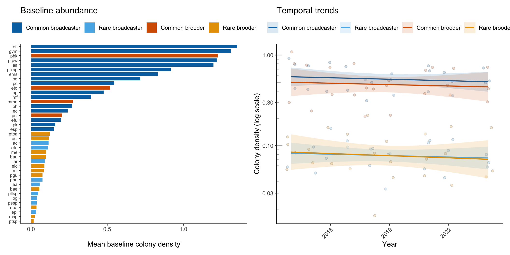
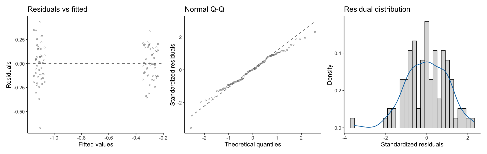

Set the publication parameters for this version
pub_range <- c(2014, 2024); program <- "octocoral"; taxon_level <- "species"; version <- "aspublished"Lasker octocoral program, colony density, 2014 to 2024
Olinger LK, Edmunds PJ, Levitan D, Smith TB, Lasker H, Feeley M, Mahoney L, Dahl A. Reproductive mode, but not rarity, influences population trajectories in corals. In Review 2026.
This analysis uses colony density from the Lasker octocoral survey program, a standalone collaborator dataset bundled with this site, not the Reef Code benthic cover section.
The Lasker octocoral program counts octocoral colonies in fixed quadrats at 3 sites off St. John. Octocorals are the soft corals and sea fans. This dataset is the supplementary comparison in the manuscript: it measures colony density rather than percent cover, and it tests whether the reproductive-mode pattern seen in stony corals extends to another cnidarian group on the same reefs. This page renders the published analysis over its paper range, 2014 through 2024. The full analysis runs below, from the colony survey file to the figure (Figure 1) and the statistics table (Table 1). Every step is folded. Open any block to read the code and the plain-language notes.
pub_range <- c(2014, 2024); program <- "octocoral"; taxon_level <- "species"; version <- "aspublished"suppressWarnings(suppressPackageStartupMessages({
library(tidyverse)
library(sandwich)
library(lmtest)
library(broom)
library(patchwork)
library(kableExtra)
}))
palette_grp <- c(
"Common.Broadcaster" = "#0072B2", "Rare.Broadcaster" = "#56B4E9",
"Common.Brooder" = "#D55E00", "Rare.Brooder" = "#E69F00"
)
label_grp <- c(
"Common.Broadcaster" = "Common broadcaster", "Rare.Broadcaster" = "Rare broadcaster",
"Common.Brooder" = "Common brooder", "Rare.Brooder" = "Rare brooder"
)The analysis begins from the colony survey file and the species-code table, both bundled collaborator data from the Lasker octocoral program (a standalone survey, not the RRS benthic cover section). The survey file holds one row per recorded colony: a census year, a site, a transect, a quadrat, a species code, and a living-tissue size class. The species-code table maps each code to a name and a reproductive mode.
surveys <- read.csv("../../data/collab/octocoral_adultSurveys_Lasker_20250409.csv")
speciescodes <- read.csv("../../data/collab/octocoral_speciesCodes_Lasker_20250409.csv")
c(survey_rows = nrow(surveys), codes = nrow(speciescodes))survey_rows codes
15106 999 The analysis keeps the columns it needs, marks each row as a counted colony, and holds the sampling design constant. The publication-range clip is the explicit first step: every downstream step runs only on years inside pub_range. At the published range this clip is harmless, since the bundled file does not extend beyond it; as the survey file grows in later monitoring years, the same clip is what keeps this page reproducing the published analysis exactly. After the clip, the analysis drops the sites and the one off-schedule survey that fall outside the comparison window, and marks a row as a colony when a living-tissue size class was recorded.
octo <- surveys |>
select(Census.Year, Site, Transect, Quadrat, Revised.Species.code, Living.tissue.size.class..1.9.9.0) |>
rename(year = Census.Year, site = Site, transect = Transect, quadrat = Quadrat,
coralSpecies = Revised.Species.code, sizeclass = Living.tissue.size.class..1.9.9.0) |>
mutate(year = as.numeric(year),
numcolonies = ifelse(sizeclass != "nd", 1, 0),
coralSpecies = ifelse(coralSpecies == "#N/A", "nd", coralSpecies)) |>
# Publication-range clip: the explicit first step of scope.
filter(year >= pub_range[1], year <= pub_range[2]) |>
filter(!site %in% c("Deep Tektite", "Yawzi", "Tektite"), year != 2017.11)
c(rows = nrow(octo), sites = n_distinct(octo$site), species_codes = n_distinct(octo$coralSpecies)) rows sites species_codes
11637 3 45 The octocoral record uses two-year groups for the baseline. Density is the analysis-ready measure: colonies counted, divided by the area of reef searched. This step counts colonies per species at each site and year, measures the area sampled from the number of quadrats searched, and divides to get colonies per square meter.
bin_years_octo <- function(df, interval = 2) {
min_yr <- min(df$year, na.rm = TRUE); max_yr <- max(df$year, na.rm = TRUE)
starts <- seq(min_yr, max_yr, by = interval)
if (tail(starts, 1) + (interval - 1) > max_yr) starts <- head(starts, -1)
map <- data.frame(year = seq(min_yr, max_yr)) |>
rowwise() |>
mutate(gs = max(starts[starts <= year]),
year_group = paste(gs, min(gs + interval - 1, max_yr), sep = "-")) |>
ungroup() |> select(year, year_group)
df |> left_join(map, by = "year") |> mutate(year_group = as.factor(year_group))
}
octo <- bin_years_octo(octo, 2)
earliest_year_group <- levels(octo$year_group)[1]
# Colonies per species at each site and year.
colonies <- octo |>
group_by(year_group, year, site, transect, quadrat, coralSpecies) |>
summarise(numcolonies = sum(numcolonies, na.rm = TRUE), .groups = "drop")
# Area searched: the number of distinct quadrats per transect, summed per site and year.
area <- colonies |>
group_by(year, site, transect) |> summarise(m2 = n_distinct(quadrat), .groups = "drop") |>
group_by(year, site) |> summarise(m2_persite = sum(m2), .groups = "drop")
# Colony density (colonies per square meter), dropping unidentified colonies.
density <- colonies |>
left_join(area, by = c("year", "site")) |>
filter(coralSpecies != "nd") |>
group_by(year_group, year, site, coralSpecies) |>
summarise(ncols = sum(numcolonies, na.rm = TRUE), m2 = mean(m2_persite),
coldens = sum(numcolonies, na.rm = TRUE) / mean(m2_persite), .groups = "drop")
c(rows = nrow(density), species = n_distinct(density$coralSpecies)) rows species
667 44 Validation note: the scoped dataset spans 2014 through 2024, holds 667 species-site-year density records across 3 sites and 44 octocoral species.
Each species receives its mean colony density during the baseline period. Ranking the species by that mean sets the order used in the figure and sets up the commonness split. The cumulative proportion of density measures how much of the baseline density the top species account for.
baseline <- density |>
filter(year_group == earliest_year_group) |>
group_by(coralSpecies) |>
summarise(meandens = mean(coldens), .groups = "drop") |>
arrange(desc(meandens)) |>
mutate(rank = row_number(),
normdens = meandens / sum(meandens),
cumsumdens = cumsum(normdens))
# head(baseline, 6)The commonness split follows the same rule as the coral programs: the species that together hold the top 90 percent of baseline cumulative density are common, and the rest are rare.
baseline <- baseline |>
mutate(commonness = ifelse(cumsumdens <= 0.90, "common", "Rare"))
table(baseline$commonness)
common Rare
19 20 Each species carries a reproductive mode, brooder or broadcaster, read from the species-code table. The table records the mode as a numeric code with a confidence level. This step maps the numeric codes to brooder or broadcaster, prefers a confirmed assignment over a likely one, and joins the mode onto the baseline species. Species without a mode leave the analysis.
codes <- speciescodes |>
filter(row_number() <= 69) |>
transmute(coralSpecies = revised.species.code, coralSpeciesName = X,
mode = case_when(reproductive.mode %in% c(1, 2) ~ "broadcaster",
reproductive.mode %in% c(3, 4) ~ "brooder", TRUE ~ NA_character_),
confidence = case_when(reproductive.mode %in% c(1, 4) ~ "confirmed",
reproductive.mode %in% c(2, 3) ~ "likely", TRUE ~ NA_character_)) |>
filter(!is.na(mode)) |>
arrange(coralSpecies, match(confidence, c("confirmed", "likely"))) |>
group_by(coralSpecies) |> summarise(Reproductive_mode = first(mode),
coralSpeciesName = first(coralSpeciesName), .groups = "drop")
baseline <- baseline |>
left_join(codes, by = "coralSpecies") |>
filter(Reproductive_mode %in% c("broadcaster", "brooder"))
# with(baseline, table(Commonness = commonness, `Reproductive mode` = Reproductive_mode))The model works on group means. This step joins the commonness and reproductive-mode labels onto the full density series, averages density within each group at each site and year, adds a year index that starts at zero, and takes the log10 of density.
analysis_data <- density |>
inner_join(baseline |> select(coralSpecies, commonness, Reproductive_mode), by = "coralSpecies") |>
group_by(category = commonness, reproductive_mode = Reproductive_mode, year, site) |>
summarise(coldens = mean(coldens, na.rm = TRUE), .groups = "drop") |>
mutate(yearind = year - min(year), coldensLog = log10(coldens)) |>
filter(coldens > 0 & is.finite(coldensLog)) |>
# Set explicit factor references (common, broadcaster) so the coefficient names match the
# group-slope terms below. Without this the levels order by locale collation, which put
# "Rare" before "common" here and broke the slope computation.
mutate(category = factor(category, levels = c("common", "Rare")),
reproductive_mode = factor(reproductive_mode, levels = c("broadcaster", "brooder")))
c(model_rows = nrow(analysis_data))model_rows
96 The model predicts log10 colony density from year, commonness, reproductive mode, and every interaction among them. Common and broadcaster are the reference levels.
model_full <- lm(coldensLog ~ yearind * category * reproductive_mode, data = analysis_data)The residual variance differs across groups, so the analysis uses HC3 heteroscedasticity-consistent standard errors from a sandwich covariance matrix.
vcov_hc3 <- sandwich::vcovHC(model_full, type = "HC3")
coef_robust <- broom::tidy(lmtest::coeftest(model_full, vcov = vcov_hc3))The four group trends are linear combinations of the model coefficients, with standard errors from the robust covariance. Annual percent change back-transforms the log10 slope into a yearly rate.
group_slope <- function(terms) {
L <- setNames(rep(0, length(coef(model_full))), names(coef(model_full)))
L[terms] <- 1
est <- sum(L * coef(model_full))
se <- sqrt(as.numeric(t(L) %*% vcov_hc3 %*% L))
tibble(Slope = est, SE = se, `Annual % change` = 100 * (10^est - 1),
`P-value` = 2 * pnorm(-abs(est / se)))
}
group_slopes <- bind_rows(
"Common broadcaster" = group_slope("yearind"),
"Rare broadcaster" = group_slope(c("yearind", "yearind:categoryRare")),
"Common brooder" = group_slope(c("yearind", "yearind:reproductive_modebrooder")),
"Rare brooder" = group_slope(c("yearind", "yearind:categoryRare",
"yearind:reproductive_modebrooder",
"yearind:categoryRare:reproductive_modebrooder")),
.id = "Group"
)The figure pairs the baseline abundance distribution with the temporal trends. The left panel ranks species by baseline density and colors each by group. The right panel shows site-level group mean density over time on a log scale, with a linear fit per group.
title_case <- function(x) recode(x, "common" = "Common", "Rare" = "Rare",
"broadcaster" = "Broadcaster", "brooder" = "Brooder")
sad_df <- baseline |>
filter(meandens > 0) |>
mutate(coralSpecies = factor(coralSpecies, levels = rev(baseline$coralSpecies[order(baseline$rank)])),
grp = interaction(title_case(commonness), title_case(Reproductive_mode)))
p_sad <- ggplot(sad_df, aes(coralSpecies, meandens, fill = grp)) +
geom_col(width = 0.8) +
scale_fill_manual(values = palette_grp, labels = label_grp, name = NULL, drop = FALSE) +
coord_flip() +
labs(x = NULL, y = "Mean baseline colony density", title = "Baseline abundance") +
theme_classic(base_size = 11) +
theme(legend.position = "top", axis.text.y = element_text(size = 7))
trend_df <- analysis_data |> mutate(grp = interaction(title_case(category), title_case(reproductive_mode)))
p_trend <- ggplot(trend_df, aes(year, coldens, color = grp, fill = grp)) +
geom_jitter(shape = 21, color = "black", alpha = 0.2, width = 0.25, height = 0, show.legend = FALSE) +
geom_smooth(method = "lm", formula = y ~ x, se = TRUE, alpha = 0.15, linewidth = 0.8) +
scale_color_manual(values = palette_grp, labels = label_grp, name = NULL, drop = FALSE) +
scale_fill_manual(values = palette_grp, labels = label_grp, name = NULL, drop = FALSE) +
scale_y_log10() + annotation_logticks(sides = "l", color = "grey70") +
labs(x = "Year", y = "Colony density (log scale)", title = "Temporal trends") +
theme_classic(base_size = 11) +
theme(legend.position = "top", axis.text.x = element_text(angle = 45, hjust = 1))
p_sad + p_trend
The table reports the model coefficients with HC3 robust standard errors and p-values. Bold marks terms significant at p less than 0.05.
term_labels <- c(
"(Intercept)" = "Intercept", "yearind" = "Year",
"categoryRare" = "Rarity", "reproductive_modebrooder" = "Repro. mode (brooder)",
"yearind:categoryRare" = "Year x Rarity", "yearind:reproductive_modebrooder" = "Year x Repro. mode",
"categoryRare:reproductive_modebrooder" = "Rarity x Repro. mode",
"yearind:categoryRare:reproductive_modebrooder" = "Year x Rarity x Repro. mode"
)
coef_tbl <- coef_robust |>
transmute(Predictor = term_labels[term],
`Estimate (SE)` = sprintf("%.3f (%.3f)", estimate, std.error),
`P-value` = ifelse(p.value < 0.001, "< 0.001", sprintf("%.3f", p.value)),
.sig = p.value < 0.05)
kbl(coef_tbl |> select(-.sig), align = c("l", "r", "r"),
caption = "Octocoral model coefficients with HC3 robust standard errors (log10 colony density).") |>
kable_styling(bootstrap_options = c("striped", "hover", "condensed"), full_width = FALSE) |>
row_spec(which(coef_tbl$.sig), bold = TRUE)| Predictor | Estimate (SE) | P-value |
|---|---|---|
| Intercept | -0.239 (0.059) | < 0.001 |
| Year | -0.005 (0.009) | 0.550 |
| Rarity | -0.843 (0.079) | < 0.001 |
| Repro. mode (brooder) | -0.061 (0.111) | 0.582 |
| Year x Rarity | 0.000 (0.013) | 0.986 |
| Year x Repro. mode | 0.000 (0.017) | 0.981 |
| Rarity x Repro. mode | 0.074 (0.147) | 0.618 |
| Year x Rarity x Repro. mode | -0.003 (0.024) | 0.901 |
group_slopes |>
mutate(Slope = sprintf("%.4f", Slope), SE = sprintf("%.4f", SE),
`Annual % change` = sprintf("%.2f", `Annual % change`),
`P-value` = ifelse(`P-value` < 0.001, "< 0.001", sprintf("%.3f", `P-value`))) |>
kbl(align = c("l", "r", "r", "r", "r"),
caption = "Group-specific temporal slopes (octocorals), with robust SEs and annual percent change.") |>
kable_styling(bootstrap_options = c("striped", "hover", "condensed"), full_width = FALSE)| Group | Slope | SE | Annual % change | P-value |
|---|---|---|---|---|
| Common broadcaster | -0.0055 | 0.0092 | -1.26 | 0.548 |
| Rare broadcaster | -0.0053 | 0.0086 | -1.21 | 0.540 |
| Common brooder | -0.0051 | 0.0145 | -1.16 | 0.727 |
| Rare brooder | -0.0079 | 0.0150 | -1.80 | 0.598 |
The octocoral analysis keeps the same abundance table it already builds above. Like the coral programs, it now also writes its analysis objects to a timestamped RData file under data/rdata/, tagged with the program and the version (as published or updated) so the two ranges never overwrite each other. The manuscript-values page reads the octocoral study window and the octocoral group slopes from this saved file.
The octocoral coefficient table uses the same HC3 robust standard errors as the coral programs. These diagnostic panels show the residual structure that motivates them: residuals versus fitted values, a normal Q-Q plot of standardized residuals, and the residual distribution.
model_diagnostics_plot(model_full)
The complete input data for this analysis (scoped to the as-published window), every derived dataset, all of the metadata, and the analysis code are available for download here.
| File | Type | Download |
|---|---|---|
analysis_dataset.csv |
data | download |
analysis_dataset.txt |
metadata | download |
baseline_classification.csv |
data | download |
baseline_classification.txt |
metadata | download |
colonyDensity_2014_2024.csv |
data | download |
colonyDensity_2014_2024.txt |
metadata | download |
group_slopes.csv |
data | download |
group_slopes.txt |
metadata | download |
model_coefficients.csv |
data | download |
model_coefficients.txt |
metadata | download |